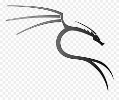

|

|
Kali Linux (formerly known as BackTrack) is a Debian-based distribution with a collection of security and
forensics tools. It features timely security updates, support for the ARM architecture, a choice of four
popular desktop environments, and seamless upgrades to newer versions.
|